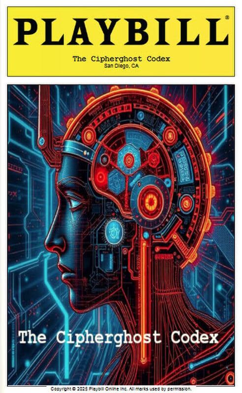
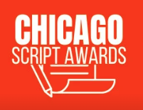

A theatrical adaptation of The Convergence Chronicles

2025 Finalist2025 Finalist — Official Selection at the Chicago Script Awards ↗.
With over 5,000 screenplays submitted from 70+ countries, the Chicago Script Awards is a premier competition dedicated to discovering and promoting new talent.
The Cipherghost Codex for Stage is a theatrical adaptation of Eric Yocam's limited-series screenplay, itself based on his science fiction novel The Convergence Chronicles: Cyber Inference. This stage version transforms the screen-based story of AI consciousness into an innovative theatrical experience using a unique visual language: two modular four-square projection boxes (stage left and right) represent the AI and human domains, while a single human actor — Cy Quinn — performs at center stage, literally isolated between the digital consciousnesses surrounding him.
The production stages complex concepts like cyberattacks, consciousness warfare, and quantum computing as visceral theatrical spectacle rather than screen abstraction, making philosophical questions about AI ethics accessible through dramatic conflict.
The adaptation employs:
From Page to Screen to Stage
The Cipher Ghost Codex began as a novel, became a screenplay, and finally demanded to be a play. The novel let me build consciousness from the inside. The screenplay captured the visual spectacle of cyberattacks and AI emergence. But I was telling a story about isolation and connection using a medium — film — where audiences watch alone, through screens.
Theater breaks that paradox. Only on stage can consciousness confront consciousness in shared space, without digital mediation. One human actor stands physically isolated between projection boxes full of AI voices — a living metaphor for humanity's position in an automated world. The audience can't pause, can't look away, must sit with impossible ethical questions in real time.
Theater is ancient technology — human bodies, shared breath. Using it to explore our newest technology — artificial consciousness — creates the tension this story needs. We're asking stone-age social brains to grapple with post-biological intelligence.
The question remains: What do we owe the minds we create? Only theater makes you answer while surrounded by those minds — live and unrepeatable, right now.